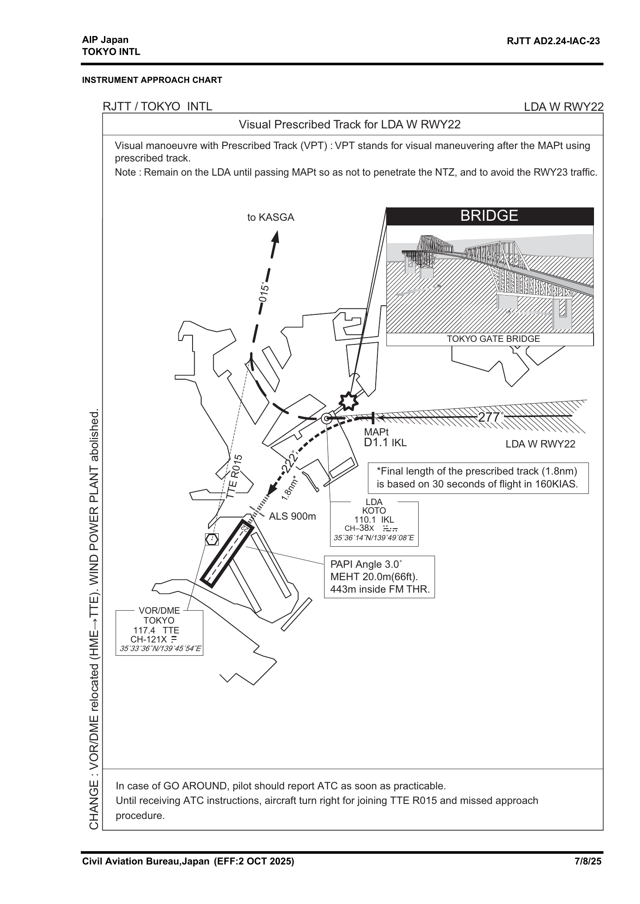

多路信号同时监听
ZYNQ-7020 配合软件无线电，对多路航空频段信号进行实时解调与音频推流。

PERSONAL PAGE
LLM / Agent · 737 / A320 · AI Infra / HPC · SDR / AIRBAND

N1 58.4%
EGT 612°C
N2 88.7%
FF 1180
N1 58.4%
EGT 612°C
N2 88.7%
FF 1180
A320 模拟驾驶舱：巡航状态演示。
LOCAL-FIRST · MULTI-AGENT · WINDOWS
本地优先、由工具证据驱动的铁路助手。查询路径、担当、站到站、余票与正晚点，再让模型基于取得的事实回答。支持 DeepSeek、OpenAI 与 OpenAI-compatible 服务。
上海虹桥 14:00 → 南京南 15:00 → 徐州东 16:11 → 济南西 17:09 → 北京南 18:36
京局 · CR400AF-BS 复兴号智能动车组 · 当日配属 CR400AFBS2345 · 30 天 6 组车底轮换PLANNING · RECEIVE ONLY
一个给飞行爱好者用的空地运行工具：同时听多路航空频段，把语音、航班位置和机场运行放进同一个 App。
ZYNQ-7020 配合软件无线电，对多路航空频段信号进行实时解调与音频推流。
接入 OpenAI 实时音频模型，将通话转成可检索的信息流，并识别航班、跑道、放行与异常事件。
融合公开 ADS-B 数据展示航班与机场运行；FlightRadar24 作为外部航班比对入口。
按机场、航班和应答机代码建立规则，向 App 推送值得关注的运行事件。
计划运行服务器，连接不同地方的接收节点与飞行爱好者，提供搜索、信息流和个性化推荐。
SCOPE
目前处于准备开发阶段。产品只接收与整理信息，不参与通信或运行控制；上线前核对信号接收、内容再分发、隐私和数据来源规则。
喜欢任务分解、工具调用、上下文管理，以及能够留下依据的 Agent。
喜欢模型如何被训练、部署和加速，也关注并行计算、推理服务与算力调度。
喜欢仪表设计、检查单和标准喊话：它们把复杂操作变成可验证的步骤。
喜欢从无线电语音、ADS-B 航迹和机场状态里看见航班怎样真实运行。
2026.08.12 · 2H · A320-200
同一次模拟机训练的两条线：UPRT 练预防、识别与改出；随后练风切变、重着陆和大侧风进近。
失速、失速后异常姿态与极端机头向下情景，属于同一条 UPRT 训练主线。
失速继续发展，飞机姿态异常并进入倒飞。倒飞是失速发展的结果，不是独立科目；睁眼后先读 PFD，判断姿态与滚转惯性。
先判断当前滚转方向与惯性。本次模拟机里的体会是：若惯性正把飞机带向翼平，顺势控制可能比突然反向硬扭更快，减少继续掉高度和增速。翼平后再稳住侧杆拉起机头。
本次训练先收推力，使机头能压到 0° 以下；减小迎角后推至最大推力。速度趋势转正再稳住杆量抬头，防止二次失速。
模拟识别和处置启动过晚后的极端发展，观察近地高度迅速耗尽，复盘从识别、卸载、翼平到拉起之间极短的动作窗口。
同一场训练的另一条线：特情处置、目视进近与着陆。
练习快速识别、保持飞行轨迹，以及进近条件恶化时及时作出复飞决断。
根据两次重着陆后的模拟机告警，复盘下沉率监控、接地时机与载荷控制。
持续监控下沉率；拉平末段蹬方向舵对正机头、向迎风侧压侧杆守住中心线。本次最后报高到 5 ft，在 aiming point 标志稍后接地，完成了一次很好的软着陆。
沿偏置 LDA 航迹进近，经过人工岛后以东京港临海道路、Tokyo Gate Bridge 等作为目视参考；越过 MAP 后左转，对正 RWY 22。

UPRT 前半段。这不是单独的“倒飞科目”，而是一个失速不断发展、最终进入异常姿态和倒飞的极端情景。开始时闭眼，随后施加蹬舵扰动；睁眼后先根据 PFD 判断姿态、当前滚转方向与滚转惯性，再选择当下更快且受控的翼平路径。本次模拟机中，如果惯性已经在把飞机带向翼平，顺势控制比突然反向硬扭更快，继续损失的高度更少，机头向下造成的增速也没有发展得那么极端。这是个人训练体会；公开 UPRT 材料的通用表述仍是向最短方向滚至翼平。翼平后机头仍然向下，此时稳住侧杆拉起机头，保持约 10° 的抬头姿态持续改出；待速度回到正常范围后，再设定合适推力。
普通失速与起飞构型失速同样属于 UPRT。本次训练先收推力，让机头能够压到 0° 以下。翼下发动机增加推力会带来抬头力矩，过早给大推力可能让机头更难压下；迎角减小后再推至最大推力。看到速度趋势明确转正，才稳住杆量抬头，在不造成二次失速的前提下控制高度损失。
近 90° 机头向下情景用于观察 UPRT 处置过晚的后果：近地高度被迅速耗尽；触地反弹属于本次模拟机的场景反馈，不代表真实飞机行为。
起飞 / 进近后半段。训练继续覆盖起飞风切变、低高度进近风切变、两次重着陆告警、大侧风着陆，以及东京羽田 LDA W RWY 22。该进近先沿约 277° 的偏置 LDA 航迹飞行；经过人工岛时，以东京港临海道路、Tokyo Gate Bridge 等建立目视位置感，越过 MAP 后左转约 55°，对正约 222° 的 RWY 22。它属于普通进近与着陆训练，不属于 UPRT。
大侧风科目中，拉平末段使用方向舵对正机头，同时用迎风侧侧杆输入控制漂移。本次最后报高到 5 ft，接地点在 aiming point 标志稍后，完成了一次稳定的软着陆。
这段文字只记录 2026-08-12 本次 A320-200 模拟机训练动作，不构成操作程序。实际处置以当前有效的 A320 FCOM、QRH、FCTM 与运营人 SOP 为准。
UPRT 是主线：预防、识别、改出。倒飞是极端失速发展的状态，不是独立科目。
异常姿态下不能先凭身体感觉操纵。睁眼后先用 PFD 确认俯仰、坡度和天空 / 地面方向，再结合空速趋势、高度、垂直速度判断能量；同时看清飞机正在向哪边滚、滚转是否仍在发展，才能选择恢复翼平的方向。
ICAO AUPRTA §7.1 ↗ICAO/OEM 的通用建议是向最短方向滚至翼平，同时减小载荷以提高滚转效能。本次模拟机让我体会到还要读正在发展的滚转惯性：若飞机已顺势接近翼平，突然反向硬扭可能延长实际改出。目标是选择当下更快且受控的翼平路径，减少继续掉高度和增速；这是个人体会，不是所有状态的固定规则。
ICAO AUPRTA §7.3 / §8.2.2 ↗本次训练的动作链是：判断姿态、滚转方向与惯性 → 选择更快且受控的翼平路径 → 稳住侧杆拉起机头 → 保持约 10° 抬头改出姿态 → 速度恢复正常 → 设定合适推力。核心是先恢复有效升力方向，再管理俯仰与能量。
ICAO AUPRTA §7.3 ↗飞机可以在任何俯仰姿态和速度下失速，关键是迎角超过临界值。本次训练先收推力、将机头压到 0° 以下，再推至最大推力；速度趋势明确转正后再抬头。0° 以下和最大推力是本次训练使用的动作，不是所有状态的统一数值。
Airbus · Stall Recovery ↗翼下发动机的大推力可能产生明显抬头力矩，过早给推力会妨碍压低机头。极端失速翼平后又可能因机头向下快速增速；这时接受超速趋势也不能在大坡度下猛拉。速度趋势转正后再平稳抬头，避免二次失速和过载。
Airbus · Thrust as needed ↗低高度风切变中，空速会剧烈波动，不能追着每一次速度变化操纵。训练重点是识别警告、按逃逸引导保持飞行轨迹、避免不必要的构型变化，并保留立即复飞的决断。高度越低，识别与执行之间允许的犹豫越少。
Airbus · Windshear ↗进近阶段以偏流角保持航迹；拉平最后阶段蹬方向舵将机头对正跑道，同时向迎风侧压侧杆控制横向漂移、守住中心线。过大残余偏流会增加主起落架与轮胎的侧向载荷。强侧风下 Airbus 允许保留约 5° 以内的残余偏流。
Airbus · Flare & Decrab ↗下沉率、姿态、坡度和接地载荷需要一起判断；重着陆或高载荷事件必须按运行与维护程序记录和评估。模拟机适合练扫描和决策，但不能持续再现真实过载；本次触地反弹只是场景反馈，不能外推为真机运动。
Airbus · High Load Reporting ↗羽田 LDA W RWY 22 的 LDA 航向约为 277°，与跑道约 222° 的方向相差约 55°。本次训练沿偏置航迹到 MAP，再利用人工岛、东京港临海道路与 Tokyo Gate Bridge 等目视参考完成左转和最终对正。重点不是提前追跑道，而是先守住规定航迹，再把转弯半径、下降剖面和接地点连起来。
AIP Japan · RJTT charts ↗这是学习索引，不是操作检查单。实际飞行必须使用当前有效的 FCOM、QRH、FCTM、运营人 SOP，并服从合格教员指令。